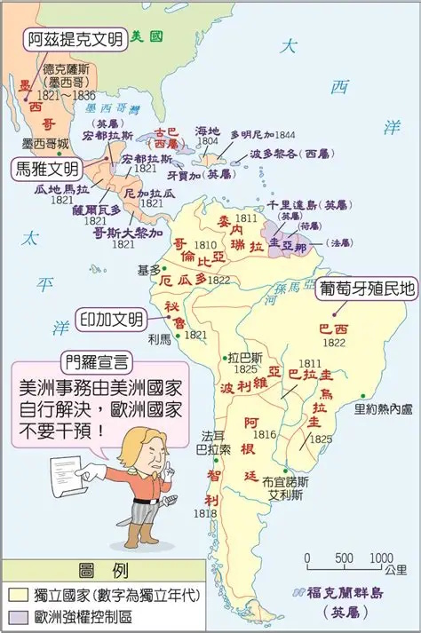
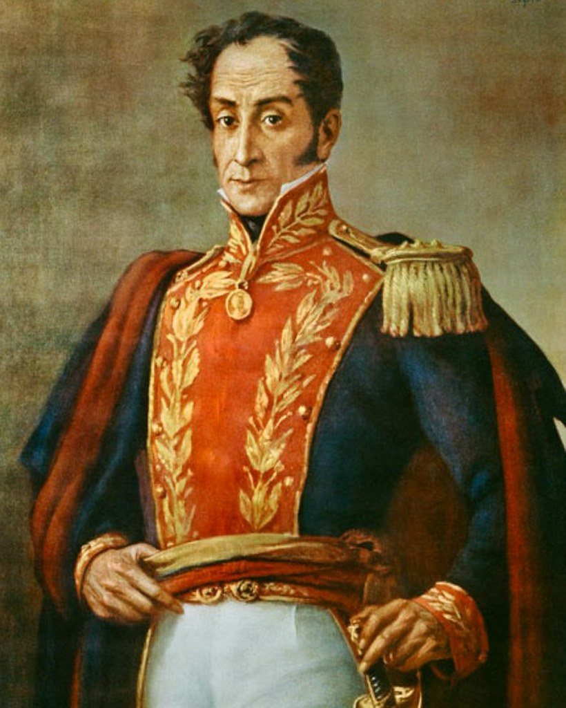

關卡 3 / 5
🌎 拉丁美洲獨立運動
19 世紀初期
📖 歷史故事
19 世紀時，拉丁美洲人民不滿西班牙、葡萄牙的殖民政府長期壟斷資源。他們一方面受民族主義與啟蒙運動思想的影響，另一方面受美國獨立與法國大革命的鼓舞，趁拿破崙席捲歐洲、西班牙與葡萄牙自顧不暇時，在玻利瓦等人的領導下，紛紛宣告獨立。
1823 年，美國總統門羅發表「門羅宣言」，主張美洲事務應由美洲國家自行解決，反對歐洲國家干預。這項宣言雖鞏固了拉丁美洲的獨立，但拉丁美洲也因為美國大力介入，而逐漸受到美國控制。

拉丁美洲各國獨立形勢圖

玻利瓦 — 拉丁美洲獨立之父

門羅宣言漫畫 — 警告歐洲列強
問題 1 / 3
拉丁美洲獨立運動受到哪些因素影響？
✅ 拉丁美洲獨立運動受到民族主義、啟蒙運動思想的影響，同時也受到美國獨立和法國大革命的鼓舞。
問題 2 / 3
「門羅宣言」的核心主張是什麼？
✅ 1823年門羅宣言主張美洲事務由美洲國家自行解決，反對歐洲國家干預美洲事務。
問題 3 / 3
被稱為拉丁美洲獨立運動重要領導人物的是誰？
✅ 玻利瓦是推動拉丁美洲各國獨立的重要人物，被尊為「拉丁美洲的解放者」。
拖拉填空挑戰
📋 將上方的詞彙拖拉到下方正確的空格中：
1823 年，美國總統 ？ 發表宣言，主張美洲事務應由美洲國家自行解決。拉丁美洲獨立運動的重要領導人是 ？。